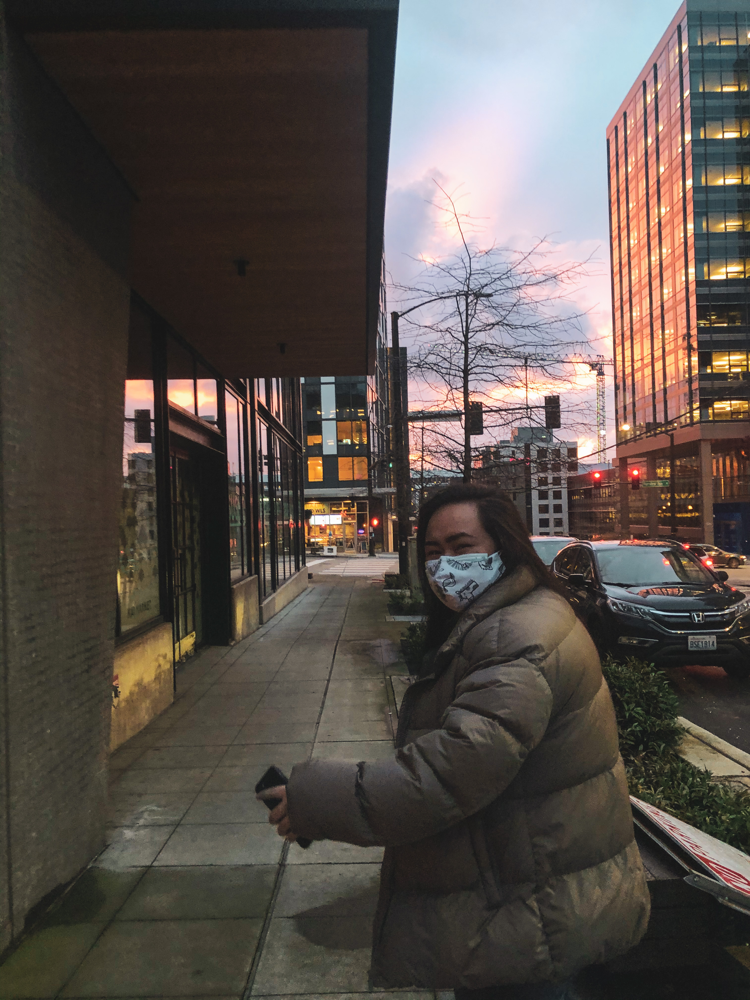

hello! i'm danica!
I use she/her pronouns. I am a first-generation Filipinx student studying Computer Science at the University of Washington's
Paul G. Allen School of Computer Science and Engineering, and minoring in Diversity.
Currently, I am serving as the President of the Filipino American Student Association at the University of Washington (FASA sa UW) , a 104-year-old
organization that is home to nearly 140+ Filipinx-American students on the UW campus. I am also a Product Manager for RISE where I get the opportunity to build an app with
a team of talented designers, developers and engineering managers from all over the country.
During my free time, you can find me playing my guitar, expanding my plant collection or going on fun walks!